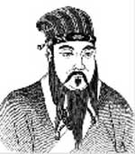

İnsan doğası özünde iyi midir, yoksa kötü müdür?
Mencius (MÖ 371-289) insanların temelde iyi oldukları düşüncesini savunması ile tanınmaktadır. Yazıları büyük ölçüde filozof ve din adamı Konfüçyus’tan (MÖ 551-479) etkilenmiştir. Mencius’un yazıları Çin felsefesinin temel metinleri arasında yer almakta ve ölümünden 2 bin yıl sonra bile hâlâ etkili olmaya devam etmektedir.

Mencius, bugünkü sınırlarla Doğu Çin’de hüküm sürmüş olan Zhou Hanedanı döneminde doğmuştur. “Savaşan devletler dönemi” olarak anılan bir karmaşa ve siyasi ayrışma çağında yaşamıştır. Babası, Mensius üç yaşındayken ölmüştür. Bunun üzerine eğitimi ile annesi ilgilenmiş ve efsaneye göre oğlu için doğru öğretmeni bulana kadar çok sayıda farklı şehri dolaşmıştır.
Annesinin sonunda bulduğu öğretmen, Konfüçyus’un torunu Zisi’ydi. Öğrencisine Konfüçyusçu ahlak ve felsefe dersleri verdi. Konfüçyus gibi Mensius da devlet memuru olarak çalıştı. Çin’de seyahat ederek düşüncelerini yaydı.
Mencius insanların dört erdeme yatkın olarak doğduğuna inanıyordu: empati, başkalarına saygı duyma, doğru ile yanlışı ayırma ve kabahat işlediğinde utanma. Tüm diğer erdemlerin “dört başlangıç” adını verdiği bu dört unsurdan kaynaklandığına inanıyordu. Hasımları olan Mozi (MÖ 470-391) ve Yang Zhu (MÖ 440-360) insanların doğuştan herhangi bir erdeme sahip olmadıklarını, aksine ahlakın eğitim ve deneyim yoluyla öğrenildiğini savundular.
Mencius politika hakkında da yazılar yazdı. Aynı zamanda Konfüçyus’un düşüncelerinin inceliklerine yoğunlaştı. Konfüçyus gibi o da bir yöneticinin erdemli olmasının önemine işaret ediyordu. Mencius buna ek olarak kötü yönetimiyle “göksel yetki”yi (mandate of heaven) kaybeden bir yöneticinin devrilmesinin doğru olacağını söylemişti.
Ek Bilgiler
1- Doğduğu Shandong’ta ona adanmış olan antik dönemden kalma eski bir tapınak, Çin Kültür Devrimi sırasında hasar görmüş, ancak 1980 yılında tamir edilerek yeniden ziyarete açılmıştır.
2- Filozofun yazılarını içeren bir derleme olan Mengzi, Konfüçyusçu düşüncenin dört temel kitabından biri olarak kabul edilmektedir.
3- Mencius’un bazı yazıları Yunan filozofu Plato’yu (MÖ 429-347) andırsa ve her iki düşünür aynı dönemde yaşamış olsa da, ikisinin birbirinden haberdar olduğunu gösteren herhangi bir kanıt yoktur.